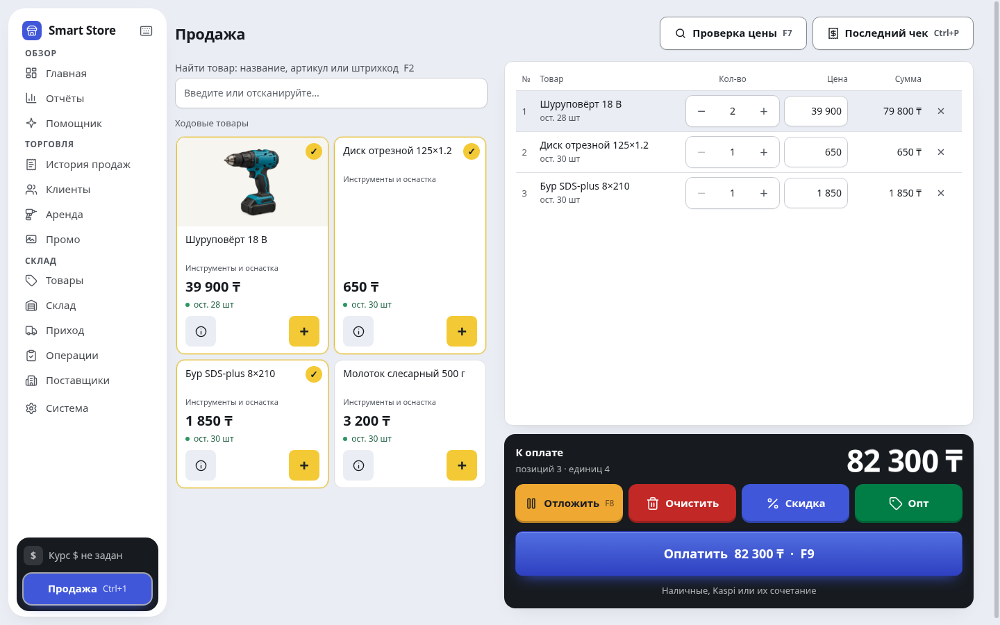
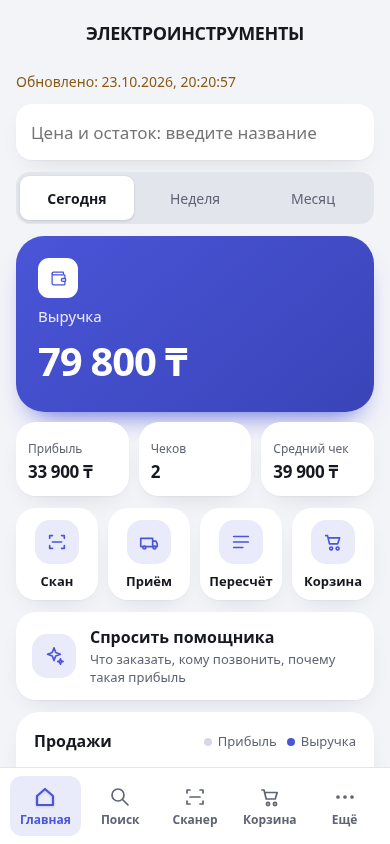

Соберите чек,
примите оплату.
Находите товар по названию или штрихкоду. Учитывайте наличные, Kaspi и долг покупателя. Отложите чек, если нужно обслужить следующего.
Для магазинов инструмента и запчастей
Продавайте, принимайте товар и учитывайте долги на компьютере магазина. Основные операции работают даже без интернета.
14 дней бесплатно · Без кода активации
Программа устанавливается на компьютер Windows. На телефоне можно подключиться к уже работающему магазину. Перейти ко входу

Рассмотреть экранКаждый день в магазине
Товары, деньги и остатки связаны между собой. Меньше повторного ввода — больше ясности в учёте.
Находите товар по названию или штрихкоду. Учитывайте наличные, Kaspi и долг покупателя. Отложите чек, если нужно обслужить следующего.
Количество, закупочная и продажная цена — в одном документе. Приход в тенге или долларах, задолженность поставщику — в валюте накладной.
Выручка, прибыль, остатки и долги покупателей. Отчёты помогают увидеть, что заканчивается и какие товары лежат без движения.
Сдаёте инструмент в аренду? Учитывайте выдачу, срок возврата, почасовую и посуточную оплату.
Есть накладная на фото или в PDF? AI поможет собрать черновик. Нужны интернет и ключ Gemini; данные перед проведением проверяете вы.

Магазин под рукой
Посмотрите показатели магазина, найдите товар или примите накладную, не возвращаясь каждый раз к компьютеру.
Для работы с телефона компьютер должен быть включён, а Smart Store открыт. Доступ извне магазина требует интернета.
Уже пользуетесь? Войти в свой магазинПервый запуск
Не нужно сразу переносить весь магазин. Начните с нескольких товаров и проверьте свой рабочий сценарий.
Скачайте установщик на компьютер магазина. Пройдите первоначальную настройку и проверьте принтер, если планируете печатать документы.
Скачать установщикУкажите товар, количество, цену закупки и продажи. Если есть таблица Excel, товары можно загрузить из файла.
На компьютере откройте «Система» → настройки телефона. Включите терминал и отсканируйте QR-код камерой телефона.
Ваш магазин — ваши данные
Касса, склад и основные отчёты доступны без интернета. Программа сохраняет резервные копии, а внешнюю копию стоит держать отдельно от рабочего компьютера.
Автоматические копии каждые два часа. Копию можно сохранить на внешний носитель и восстановить на другом компьютере.
Интернет нужен для обновлений, автоматического курса, AI и доступа с телефона вне магазина. Для AI используется ключ владельца.
Попробуйте на своём магазине
Установите программу, добавьте товары и проведите первые операции. Пробный период доступен без кода активации.
Лицензия рассчитана на один компьютер магазина. Стоимость, активацию и перенос на другой компьютер можно уточнить в WhatsApp.
Условия лицензии и работа с даннымиПосле пробного периода для новых операций нужна лицензия. Уже внесённые данные остаются доступны.
До установки
На компьютере можно продолжать продажи, работать со складом и основными отчётами. Онлайн-функции — курс, AI, обновления и удалённый доступ с телефона — потребуют подключения.
Нет. Сначала установите Smart Store на Windows, затем откройте QR-код из настроек телефона в программе. На телефоне можно добавить страницу на главный экран. Компьютер со Smart Store должен оставаться включённым.
Для новых продаж и приходов нужна лицензия. Внесённые данные не удаляются: их можно просматривать, печатать, выгружать и копировать. По активации напишите в WhatsApp.
Для AI нужно настроить собственный ключ Gemini на компьютере. Функция работает через интернет; доступность и стоимость запросов зависят от квот и условий Google. Распознанные данные нужно проверить перед проведением прихода.
Установщик пока без цифровой подписи, поэтому Windows может показать предупреждение. Проверьте, что скачали файл по кнопке этого сайта или из официального репозитория Smart Store. Если есть сомнения, обратитесь в поддержку перед установкой.
Программа проверяет новые версии и скачивает их в фоне при наличии интернета. Доступное обновление можно применить из программы; незавершённую продажу сначала нужно закончить. Повторно скачивать установщик с сайта для каждого обновления не требуется.
Для действующих клиентов
Введите код или адрес магазина из программы на компьютере. После перехода понадобится PIN либо логин и пароль вашего пользователя.
На компьютере откройте Smart Store → «Система» → настройки телефона. Там находятся код, адрес и QR-код магазина. Если адрес ещё не выдан, проверьте подключение компьютера к интернету.